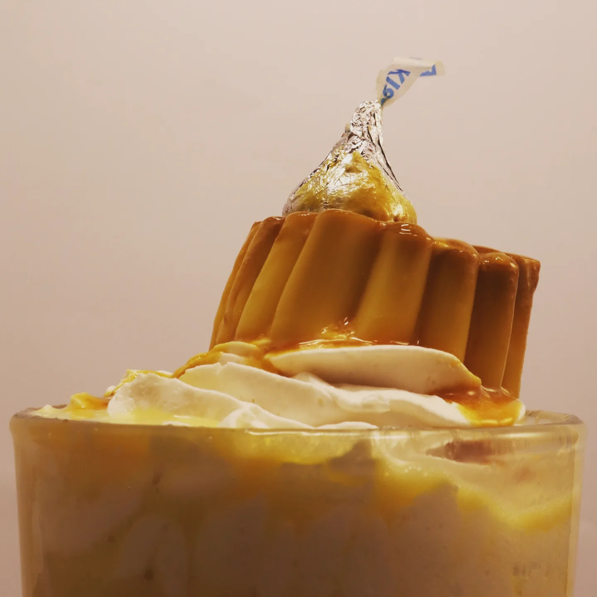

Descripción del Proyecto
Galería enfocada en la producción visual gastronómica y el Food Styling. El objetivo principal de este proyecto fue resaltar las texturas, frescura y paletas cromáticas de los alimentos a través del control técnico de la iluminación de estudio, la composición de elementos (props) y el revelado digital.

Perspectiva Cenital y Storytelling
Composición en plano cenital que integra el platillo principal con elementos contextuales como una taza de café y el menú de la marca, creando una narrativa visual completa sobre la experiencia de consumo.

Volumen y Textura del Alimento
Captura en ángulo directo que aprovecha una iluminación lateral suave para esculpir el relieve del waffle, resaltando el brillo de los frutos rojos y la textura de la crema batida sin perder detalle en las sombras.
Simetría y Contraste Cromático
Diseño y distribución de elementos complementarios en el encuadre utilizando la regla de los tercios. Selección de colores complementarios en el fondo para potenciar el contraste del producto central.


Dirección de Arte y Props
Fotografía de estilo de vida (lifestyle) usando una paleta minimalista. La distribución de elementos complementarios como el libro y el café ayuda a guiar la mirada en diagonal hacia el postre central

Enfoque Selectivo y Capas
Captura en plano medio que destaca la arquitectura vertical del postre, aislando mediante una profundidad de campo reducida las texturas de la crema, el caramelo y el elemento icónico de chocolate en la cima.